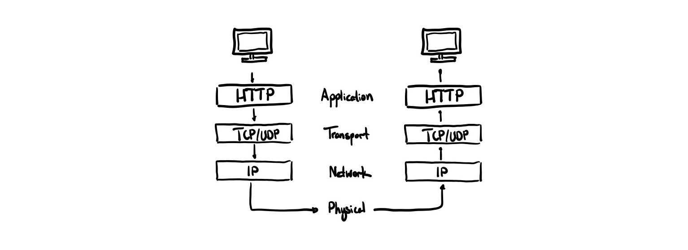
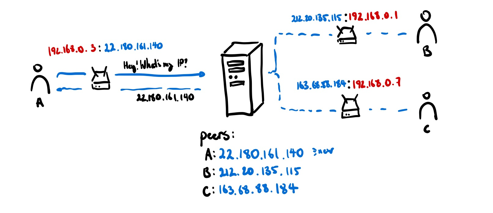
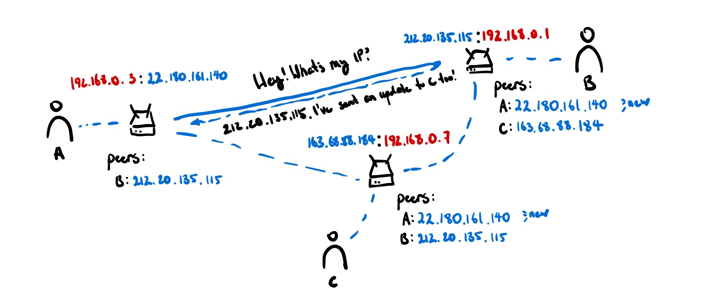

This post is the source material for my workshop on ‘Intro to Computer Networking & P2P’ at Hack the North 2022
A brief history
A hallmark of the modern day human is the ability to communicate with each other. From spoken word to written language and through to even radio and telephone, we’ve spent a lot of time innovating on new ways to transmit data between people and places. With the introduction of the first computers, it was only a matter of time before we figured out how to make our computers talk too.
Early computer networks looked pretty similar to landline telephone connections. There is a physical wire directly connecting you from point A to point B for the duration of the connection. This was called circuit switching.
Of course, during the early days when you could still count the number of computers connected to the Internet on your fingers, this was not problematic. But as the size of the internet grew, telecommunication networks created huge hubs to be able to handle the volume of traffic. The problem was, this hierarchical network — like all hierarchical networks — was vulnerable to targeted attack. Knock out a single node and you cut off lots of users, even whole regions.
This was not a comfortable position to be in during the height of the Cold War. There was a demand for a resilient and fault-tolerant network topology that would adapt to changing configurations and load on the fly.
To be efficient is to be fragile, to be fragile is to go extinct.
Nature of course, has its way of selecting for resiliency. In ecology, there is a concept called r-K Selection Theory related how certain species trade off between quantity and quality of their offspring. It notes that there are predominantly two types of species:
| r-selected | K-selected |
|---|---|
| many offspring, low investment | few offspring, high investment |
| thrive in unstable habitats | thrive in stable habitats |
How could move the internet away from being a K-selected monolith?
In 1959 RAND, a Californian think-tank, assigned Paul Baran, a young engineer at that time, to develop a communication system that could survive a nuclear attack. Instead of a static network with hardened switching stations, he proposed a dynamic network with disposable routers that could freely join or leave. Each router would help forward individual little bits of information called packets around the internet. Thus, packet switching was born and with it, the internet became an r-selected network.
Zooming out
Let’s zoom out a bit to see how this fits into the grander vision of the internet.
The modern internet, like many things in computer science, has layers of abstraction. It is also a network of networks, composed of many systems connected to each other.

When you request a website or make an API call, you go down all these layers and then back up at the other end.
- Application Layer — where applications can access the network services using protocols like HTTP.
- Transport Layer — ensures data arrives in order, recovers lost data by retrying, sends data to the right process on your machine
- Network Layer — routes packet through routers to destination machine
- Physical Layer — connecting individual machines together, transferring the actual bits
When we talk about making a request to a server, we normally think about this at the Application Layer. If we make a HTTP request to Twitter to get the latest posts, we think of our request as going directly to Twitters’s servers, not hopping around from router to router, snaking its way through various networks to get to its destination and back.
Once we look at the web from the Application Layer, we see something curious. Although the underlying Transport, Network, and Physical layers of our web are decentralized, centralization has re-emerged on the web once again. When you message a friend on Facebook, it doesn’t go directly to them. Instead, it goes to Facebook’s servers and it forwards it to your friends device
This is the exact centralizing behaviour that we were worried about before.
To be efficient is to be fragile, to be fragile is to go extinct.
To decentralize the web is to ensure its resilience and long-term functioning.
When we refer to peer-to-peer today, we don’t mean the underlying networking stack, but rather on the Application level. How can we bypass going through servers to facilitate all of our actions and instead connect directly with our peers?
I’m not saying that platforms are inherently bad. They can enable efficiency at scale by making the average distance between nodes. Platforms become problematic when there is no meaningful way to easily switch from one platform to another when we are dissatisfied.
Peer-to-peer applications abate this somewhat. There is no singular failure point; as long as two peers have the application code that connects them together, they don’t need to rely on a centralized provider.
Of course, peer-to-peer applications are not without their disadvantages either. Not everything should be peer-to-peer, but we should empower developers to at least know about what peer-to-peer is and how to use it in the right contexts.
| Client-server | Peer-to-peer |
|---|---|
| Better for persistent applications that need to store data for a long time | Better for low-latency applications like games and video calling (no need to make an extra trip to the server) |
| Easier to make applications that are mostly about manipulating data and resources | Easier to make applications that are mostly users interacting with each other |
| Servers waits for requests from clients and responds to them (one-directional) | Nodes have persistent connections so can send updates to each other whenever |
| Needs hosting services to keep databases or application servers online | There are no privileged nodes that need to be up. No hosting costs! |
A lot of my independent research is around how to make it easier to write peer-to-peer software and make it possible to do the things client-server models are good at in these peer-to-peer contexts (e.g. data persistence).
Peer-to-peer today
So, how do we make peer-to-peer connections today? Like talking with a friend, there are a two key criteria that need to be met before you even start to communicate:
- You need to know how to find where they are to initiate a conversation
- You need a shared language to understand each other
In the context of peer-to-peer, these are:
- What is the other user’s IP address?
- What application or protocol are we running?
It turns out, we can reuse much of the internet’s existing infrastructure to answer both of these questions with some caveats.
Today’s web is peer-to-peer hostile — over 79% of peers on the Internet are not directly connectable. Firewalls are frequently configured to allow only outgoing connections, based on the assumption of the client-server model of communication. If a router uses NAT, it hides the ‘true’ port and IP combination of any machine that is behind it, meaning that connecting to an arbitrary port is often not allowed1.
To get around this, we can use a technique called hole-punching. The idea is that to allow packets to come in from a remote endpoint, the computer behind the NAT or firewall needs to send something to the remote endpoint first. By doing so it creates a “hole” in the NAT or firewall through which communications can proceed.
For hole-punching to work, peers need some way of looking at themselve s like they would in a mirror to figure out what their external facing IP address is so others can figure out how to reach out.
One common method is through the use of signalling servers. These servers just forward information between peers all interested in a given topic (e.g. connecting to a given application) so they can exchange the minimum amount of information to be able to directly connect. This ends up effectively being a ‘registry’ of all people who are interested in connecting with each other.

Unfortunately, this method still relies on a server to handle special responsibilities. One completely decentralized way of doing this is doing something called a distributed hash table — a DHT. Each node holds a small shard of the DHT, so the burden of participation isn’t painful for any one agent. The DHT stores multiple redundant copies of each entry so that the information is available even when the author is offline. Peers can then store info about each other in this DHT to figure out what each other’s IP addresses are.

Ok perfect, now we can start sending messages across to our peers. We can send arbitrary data payloads but we can only send it to one person at a time. If we want to talk to a group of people, we need to start conversations with all of them! In this case, the underlying medium is not perfect and we can’t ensure that messages will always arrive in the right order.
In the face of this uncertainty, we still need some way to come to some shared understanding of what the ‘state’ of the application is. In literature, this is called the state machine replication problem.
Typically, this can be done using a consensus mechanism where nodes all vote and agree on what the ‘right’ state of the application is, much like a government election. This is how distributed databases work to come to a consistent state amongst all the replicas.
More recently, researchers found another way of doing this is using a specific type of replicated data structure called a commutative replicated data type or CRDT. This uses mathematical properties of operations to guarantee that even if messages are received out of order, they will all eventually converge to the same result. CRDTs are at the base of a lot of popular ‘shared type’ libraries like Hypercore or Yjs, which make it really easy to use JSON-like data-types in your code that automatically receive updates from other peers.
Conclusion
This post was a rough mile-high overview of how peer-to-peer differs from client-server models of computer communication. I hope this enables people like you to explore new realms of possibilities of creating lively digital spaces.
Footnotes
-
Fun story: IPv4 only supports 4,294,967,296 total addresses. This is less than the total number of devices that are currently connected to the internet. In fact, we ‘ran out’ of IPv4 addresses in 2011. NAT exists so that instead of every computer getting a public unique address, every home router gets a single public unique address. Computers then only get a private address assigned to them by the router and it translates the address so that to anyone external to the network, it looks like all the traffic is coming from and goes to the router. ↩